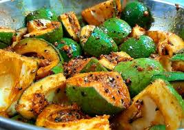

Pickle

ingredients
- Cucumbers (or other vegetables like carrots, peppers, etc.)
- Vinegar (typically white vinegar or apple cider vinegar)
- Water
- Salt (preferably non-iodized)
- Sugar (optional, for a sweeter pickle)
- Spices (such as mustard seeds, dill seeds, peppercorns, coriander seeds)
- Garlic cloves (optional)
- Fresh dill (optional, for dill pickles)
- Bay leaves (optional, for added flavor)
Instructions
- Prepare the vegetables: Wash and slice cucumbers (or other vegetables) into desired shapes.
- Prepare the brine solution
- Prepare the jars: Wash jars and lids thoroughly with hot, soapy water. Sterilize them by boiling in water for 10 minutes or running them through a hot dishwasher cycle.
- Add flavorings
- Pack the jars
- Seal the jars: Wipe the jar rims clean with a damp cloth. Place lids on the jars and tighten the bands until they are just fingertip tight.
- Store the pickles
- Wait for flavors to develop: Refrigerate pickles for at least 24 hours before consuming for best flavor. Shelf-stable pickles should be stored in a cool, dark place and allowed to mature for several weeks.